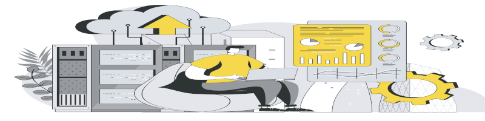

A Revolução da Inteligência Artificial
Um dos principais motores desse crescimento foi a Inteligência Artificial (IA). Organizações como a Google e a Microsoft ampliaram significativamente seus investimentos em modelos avançados de aprendizado de máquina.
Segundo relatórios do setor tecnológico, a IA passou a ser aplicada em áreas como:
- Diagnósticos médicos
- Análise de dados empresariais
- Sistemas de recomendação
- Atendimento automatizado Segurança digital
Especialistas afirmam que a Inteligência Artificial representa uma das maiores mudanças estruturais desde a Revolução Industrial, pois altera a forma como decisões são tomadas e processos são executados.
A Expansão da Computação em Nuvem
Outro fator determinante para o crescimento tecnológico foi a expansão da computação em nuvem. A Amazon, por meio de seus serviços de infraestrutura digital, consolidou um modelo que permite que empresas armazenem e processem dados remotamente. Esse modelo oferece:
- Redução de custos com servidores físicos
- Escalabilidade sob demanda
- Maior segurança de dados
- Acesso remoto às informações

Durante a pandemia global, a adoção da nuvem cresceu de forma ainda mais acelerada, viabilizando o trabalho remoto e a digitalização de diversos setores da economia.
Redes Sociais e Transformação Digital
As redes sociais também tiveram papel fundamental nesse crescimento. A Meta ampliou seu ecossistema digital, enquanto o TikTok revolucionou o consumo de vídeos curtos e conteúdo instantâneo. Essas plataformas passaram a influenciar:
- O marketing digital
- A criação de novos modelos de negócios
- A educação online
- O comportamento social